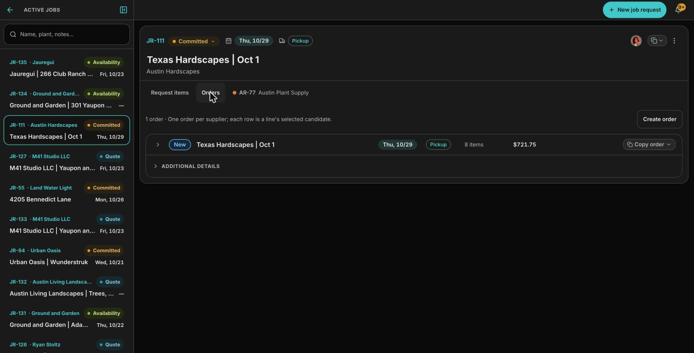

Jobs and job lines
A Job (shown as JR-<number>) is one customer's request for plants. It holds one line per plant. Each line can have several candidates, meaning supplier options. Chris picks one candidate per line by dragging it, and the job moves from Quote to Availability to Committed, and finally to Won or Lost.
In short
Everything LPS does for a customer happens inside a job. A contractor, landscaper or homeowner sends a plant list by chat, email, screenshot or plan. Rosie, the sales and orders agent, turns it into a job. The job records:
- the customer,
- when they need the plants (the EDD),
- whether they will pick the plants up or want them delivered,
- the addresses,
- two kinds of notes: one the customer may see and one kept internal,
- one line per plant asked for.
Each line has three layers:
- What the customer asked for, the original demand: the plant, the size and the quantity.
- The options found, called candidates. A candidate is one specific plant and size from one supplier at one price, shown as a coloured pill.
- What LPS will supply: the Selected candidate. Its size, price, available quantity, status and customer note fill the line.
The job's status shows where the sale stands:
- Quote: priced from the supplier price list.
- Availability: a supplier has been asked to confirm stock.
- Committed: the customer committed and a supplier order exists.
- Won or Lost: closed.
Each line has its own status that shows what is known about that plant: Available, Partial Qty, Unavailable, Diff Sz/Sub, Can Order, Arriving Soon or Pending.
Job statuses and lifecycle
Every new job starts at Quote. Rosie creates every job at Quote, even when the customer has already committed. The job then moves forward as real events happen. Stages can be skipped: a committed order can go straight from Quote to Committed, and a quick quote never leaves Quote until it is closed.
| Label | Stored value | Short token | Colour | What it means | How a job gets here |
|---|---|---|---|---|---|
| Quote | quoted | Qte | teal | Lines are priced, usually from the Austin Plant Supply (APS) price list. Being at Quote doesn't mean a quote document exists. | The database default for every new job. |
| Availability | availability | Avl | lime | A supplier has been sent an availability request (AR) for this job. | Set automatically when an AR to an LPS Partner is published. For a non-partner, set when Rosie records that the public-link email was actually sent. |
| Committed | committed | Cmt | amber | The customer has committed, and at least one supplier order covers this job. | Set by order creation. The status stays Committed while the supplier confirms and readies the order, because jobs have no "Confirmed" stage. |
| Won | closed_won | Won | green | Closed as a sale. Terminal. | Chris's explicit word, or automatically when the last order closes and all demand was ordered (see Closing). |
| Lost | closed_lost | Lost | red | Closed without a sale. Terminal. | Chris's explicit word. A job lost before any order can be closed directly. |
| Archived | archived | ? (no token) | grey | Legacy only. The status can still be stored and displayed, but the status picker doesn't offer it. | Older records. |
The three working stages are Quote, Availability and Committed. A job in one of them counts as active. Active jobs appear in the Active Jobs sidebar and in customer "Active requests" totals, and their Rosie chat stays open in the chat picker.
Rules about status changes
- Events never move a job backward or reopen it. Rosie reports workflow events:
pricing_fetched,quote_sharedandavailability_sent. Of these, onlyavailability_sentchanges the stage, and only from Quote to Availability. The others change nothing. Events do nothing to a closed or inactive job. - Changing between working stages leaves ARs open. Moving a job to Won, Lost or Archived (or deactivating it) closes its ARs and revokes their public links.
- Choosing a status never places an order and never copies supplier answers into the lines.
- Old saved filters are migrated. Retired labels such as Active, New, Sourcing, Quoted and In Progress map to Quote (In Progress maps to Quote + Availability). Confirmed maps to Committed. Closed won and Closed lost map to Won and Lost.
How job statuses are stored and enforced
- Column
job_requests.status,DEFAULT 'quoted'. CHECKjob_requests_status_checkallowsquoted, availability, committed, closed_won, closed_lost, archived. REQUEST_STATUSES(the five selectable values, in picker order),REQUEST_STATUS_META(labels and tones),REQUEST_STATUS_TOKENS(short codes;requestStatusTokenfalls back to?, and no component currently renders them) andACTIVE_JOB_STATUSES = ['quoted','availability','committed']are inapp/lib/job-requests.ts.canonicalRequestStatus('confirmed')returns'committed'on read (migration 0093 removed job Confirmed). A write ofconfirmedis rejected because it is not inREQUEST_STATUSES.record_job_workflow_event(job, event)(latest body in 0093) changes the stage only when the job is active and not terminal. It movesquoted → availabilityonavailability_sent. It also still accepts two events Rosie's skill no longer uses: legacycustomer_confirmedmoves Quote or Availability tocommitted, andsupplier_confirmedchanges nothing. It writes no event log: an event that doesn't move the stage leaves no trace in the database.- Trigger
availability_requests_progress→advance_linked_job_on_partner_request()recordsavailability_sentwhen an AR for an active LPS Partner supplier leavesdraft. create_orderandcreate_direct_orderrunUPDATE job_requests SET status='committed' … WHERE status IN ('quoted','availability')for every allocated job.- A manual change goes through the card's
StatusPill→PATCH /api/rows→updateFields('job_requests', id, {status}), validated againstENUMS['job_requests.status'].
Sources: app/lib/job-requests.ts, app/lib/queries.ts, harness/agents/daisy/migrations/0092_job_orders_workflow.sql, …/0093_remove_job_confirmed_status.sql, …/0127_ar_publish_and_retention.sql, harness/agents/rosie/skills/agent/job-requests/artifacts/lifecycle.md, app/lib/request-list-state.ts
Creating a job
The app has no "new job" form. Jobs are written by Rosie from a conversation, so the request and its record are tied together from the first message.
- Press New job request. This is a pill in the header on desktop (on the job page it sits in the action bar above the record, next to the notification bell) and a floating + button on phones. The app reserves the next job number (
JR-<id>) without creating a record yet. - Talk to Rosie. The app opens
/jobs?jr=<id>with Rosie's chat on the job's own thread (jr-<id>). Until Rosie saves something, the page shows "New job request · JR-<id>" and "Tell Rosie about the job. Saved details will appear here.", with Open Rosie and All jobs buttons. - Rosie loads first and asks later. She saves the job and its lines straight away and posts the JR link. Then she prices every row, records the candidates, and posts the result with one batch of questions. These cover who the customer is, delivery or pickup, the EDD, and any unclear rows. She never asks which substitute you prefer: alternatives are recorded as candidates, and Chris chooses by dragging.
- Customer find-or-create. Rosie matches an existing customer on email, then phone, then name or company. She creates a customer only when the customer is known and nothing matches. If the customer is unknown, the job is saved without one and any identity clue goes in the Internal note. The app cannot reassign a job's customer itself.
A request can also start outside the app, for example in Rosie's main chat, on Telegram or in a customer's thread. Rosie then reserves a job number herself, hands the request to the jr-<id> thread and replies with a "Continue in JR-<id> chat" link.
Simple price questions don't create a job. Request types follow Rosie's usual flows:
| Request | What Rosie does |
|---|---|
| Price question | Answers it without creating a job record. |
| New request | Job, lines, then candidates and prices for every row. Posts the JR link and the gaps. An AR follows only if Chris approves the scope, and a quote only if someone asks for one. |
| Quick quote | Job, lines, price, quote, then stop without an AR. |
| Committed order | Job, lines, candidates (keeping given prices and filling gaps from APS), then a direct order, skipping the quote and the AR. |
| Accepted quote | The existing job and its accepted terms become a direct order. |
How reservation and intake work
- POST
/api/requests/reserve→reserveJobRequestId()→ RPCreserve_job_request_id(), anextvalon the identity sequence that inserts nothing (migration 0072). NewJobRequestButton(app/components/workspace/shell.tsx) storessessionStorage['lps.jobs.intake.v1'] = {id, returnUrl}, navigates to/jobs?jr=<id>and callsopenChat({agentId:'rosie', threadId:'jr-<id>'}).- Focused intake mode (
?jr=<id>&intake=1plus matching same-tab evidence fromhasFocusedIntakeEvidence) hides the header, rail and mobile bar, titles the screen "JR-<id> · New request with Rosie" and adds a "Saved so far" panel (IntakeSaved). The New job request button does not addintake=1, and no current app link does, so this mode is only reached by a URL that carries it. - The job row is inserted by Rosie (SQL with
OVERRIDING SYSTEM VALUEfor the reserved id, in thejr-<id>conversation). The app never inserts intojob_requests. - Job naming: Rosie stores names as
Customer/Company Name | Slug. The column is nullable and never generated.
Sources: app/app/api/requests/reserve/route.ts, app/lib/job-request-queries.ts, app/components/workspace/shell.tsx, app/app/jobs/page.tsx, harness/agents/rosie/skills/agent/job-requests/SKILL.md, …/job-requests/artifacts/intake.md, harness/agents/daisy/migrations/0072_reserve_job_request_id.sql
What a job records
Most job fields are edited in place on the job card. The job's own fields are:
| Field (UI label) | Column | What it holds | Rules |
|---|---|---|---|
| Job number | id | Shown as JR-<id>. | Reserved by New job request. |
| Job name | name | A short name, usually Customer | Slug. Edit it with the pencil beside the name. | 160 characters at most. Optional. |
| Customer | customer_id | The person or company asking. The card shows company (or name), with a "Retail" prefix for Homeowner/Retail customers. | Set by Rosie's find-or-create. Not editable in the app. |
| Status | status | The sales stage (see above). | One of the five stages. |
| EDD: "Expected delivery / installation date" | expected_install_date | When the customer needs the plants on site. | A real calendar date (YYYY-MM-DD), or empty for Unknown. An empty EDD is outlined to draw attention. |
| Pickup / Delivery (shown as "Fulfillment" on headers) | fulfillment_method | Whether the customer collects or LPS delivers. | pickup, delivery, or empty ("Not set", shown as "-" and outlined). |
| Shipping address | shipping_address/_city/_state/_zip | Where plants go. Shown as "Delivery" in the compact details. | Free text. |
| Billing address | billing_address/_city/_state/_zip | "Payment contact / billing". | Free text. |
| Note for customer: "the customer sees this" | note_for_customer | Information for the customer only. | Can appear in customer-facing output. |
| Internal note | note_internal | The customer's extra requirements, open questions, internal context. | Never shown to customers or suppliers. |
| Created / Last updated | created_at, updated_at | Timestamps, displayed in America/Chicago time. | Read-only. |
The job has no fulfillment date. That date exists only on supplier orders: it is filled when known, usually when the supplier confirms the order. Never copy the EDD into it. Pickup/Delivery on a new order defaults from the job.
Validation and write path for job fields
- Writes go through PATCH
/api/rowswith{table:'job_requests', id, column, value}or{…, changes}→updateFieldsinapp/lib/queries.ts. A multi-field write is one atomicupdate(). - Writable columns (
WRITABLE.job_requests):name, status, note_for_customer, note_internal, expected_install_date, fulfillment_method, billing_address, billing_city, billing_state, billing_zip, shipping_address, shipping_city, shipping_state, shipping_zip. Any other column raises "refusing to write job_requests.<column>". - Empty strings become NULL. A bad date raises "Expected delivery / installation date must be a valid YYYY-MM-DD date".
JOB_NAME_MAX_LENGTH = 160(app/lib/job-identity.ts) is enforced inapp/app/api/rows/route.ts. - Editors:
EditableEddandEditableFulfillment(app/components/workspace/job-metadata.tsx) on the card header;JobSchedule,AddressCardand the noteEditableTextareas inapp/components/workspace/job-request.tsx. - Other schema columns:
is_activeandrosie_thread_ref. The app readsREQUEST_COLUMNSinapp/lib/job-request-queries.ts. - The details tray also has a block called "The customer's own words". It lists notes of kind
customer, butnotesOfinjob-request-queries.tsonly producessharedentries, so it always shows "Nothing on file."
Sources: app/lib/queries.ts, app/lib/job-identity.ts, app/components/workspace/job-metadata.tsx, app/components/workspace/job-request.tsx, harness/agents/rosie/skills/agent/job-requests/artifacts/notes.md
Finding jobs: Active Jobs sidebar and All jobs
Two places list jobs. Use the Active Jobs sidebar to move quickly between jobs being worked. Use All jobs to search, filter and act on many jobs at once.
Active Jobs sidebar (on the job page)
- A 292 px panel on the left of
/jobson desktop. It replaces the app's normal navigation rail and starts open. You can collapse it, and the browser remembers your choice. The ← button goes back to All jobs. The sidebar is hidden on phones. - It lists every active job (Quote, Availability or Committed), most recent activity first. Activity means the newer of the latest Rosie chat message and the latest job edit.
- Each card shows the JR number, the customer (with a "Retail" prefix for homeowners), a dot for unread chat, the status pill, the job name and the EDD.
- Search ("Name, plant, notes…") filters instantly as you type. It matches job name, JR reference, customer name and company, plant names and sizes, and the job and line notes. Every word you type must match somewhere. It never searches chat transcripts, closed jobs or deleted lines. It reports "n matching jobs" and never changes the job you have open.
- The list updates live when jobs, lines or customers change. Once a job is open, clicking another card switches jobs without adding browser history entries.
All jobs (/requests)
- The single list of jobs: 25 per page, ordered by last update (newest first).
- Default filter: Status = Availability + Committed. Quote, Won and Lost jobs are hidden until you tick them in the Status chip. Unticking every status shows no jobs at all. Legacy Archived jobs never appear here, because the Status chip doesn't offer Archived. Clear all returns to the default filter rather than to "no filters".
- Filter chips: Status, Item status (desktop only), Customer, Created and Updated (Today, Last 7, 14 or 30 days). Your filters are remembered for the browser tab.
- Search ("Search plants, customers, JR-…") matches a plant name, a customer's name, company or email, or a job number (
42orJR-42). It does not search job names or notes (the Active Jobs sidebar search does). If a job was found through a plant, only the matching plants are shown in it. - On desktop, cards expand in place to show the full line table ("Expand all / Collapse all"). On phones, cards never expand. Tapping the job name opens the job page.
- Tick lines to get a selection bar with Set status (sets the line status of every ticked line), Availability request and Clear. Availability request asks one supplier (APS is preselected) about the ticked lines, with one AR per job. Each ticked line is asked as its original request. The AR is sent to the supplier straight away, not saved as a draft. If the job already has an AR with that supplier, the lines are added to it, and a closed one must be reopened first. See Availability requests.
- The footer shows filtered totals: number of items and subtotal across all matching jobs, not just the current page.
![The All jobs page. A toolbar with a job search box, Expand all, and filter chips for Status (2 selected), Item status (7 selected), Customer, Created and Updated, plus a New job request button. Below it, a list of collapsed job cards, each showing an Availability or Committed status pill, a JR number and job name, an EDD date tag or a dashed Set date tag, a Delivery or Pickup tag, an item count and a subtotal. A Filtered totals footer shows Items 104 and a subtotal. On the right, the Rosie chat panel is open with tabs for Rosie, a customer and a supplier, and a message box reading Ask Rosie.](screenshots/all-jobs-with-chat.jpg)
/requests) with the default Status filter (Availability + Committed, shown as "Status · 2"). Each card shows the status pill, JR number, EDD (or "Set date"), Pickup/Delivery tag, item count and subtotal, and the footer totals cover every matching job, not just this page.Inbox and list queries
- GET
/api/job-inbox→listJobInbox()(app/lib/job-inbox-queries.ts). It returns active jobs inACTIVE_JOB_STATUSESjoined with customers and the open Rosie threadjr-<id>. There is a hard ceiling of 5,000 rows: above it the route answers 503 withcode: 'JOB_INBOX_OVER_CAP'rather than return a partial list. - Ordering is
orderJobInbox(app/lib/job-inbox.ts): activity time, then chat before record activity, thenid DESC.unread=thread.lastId > thread.webReadId. - Search is client-side:
searchJobInbox(app/lib/job-inbox-search.ts) requires every lower-cased term to appear in the server-builtsearchText. - Rail open state is stored in
localStorage['lps.jobs.rail.open.v1']. It is open unless the stored value is'0'. - GET
/api/requests?q=&page=&status=&itemStatus=&size=&customer=&created=&updated=→listJobRequests.status=nonemeans an explicitly empty selection, which returns nothing. Order isupdated_at DESC NULLS LAST, id DESC, active rows only, and the page size isJOB_REQUEST_PAGE_SIZE = 25.?facets=1returns size and customer option lists plus summary totals. - The default filter is
DEFAULT_STATUSES = ['Availability','Committed']inapp/app/requests/page.tsx. Its code comment says "All current stages. Clearing the filter includes legacy archived jobs", but the code doesn't do that:buildRequestFilterQuery(app/lib/request-list-state.ts) always sendsstatus, asnonewhen nothing is ticked, and the route only accepts values fromREQUEST_STATUSES, which has noarchived. State is kept insessionStorage['lps.requests.visit.v1']. - The selection bar's Availability request calls POST
/api/availability-requestsonce per job →createAvailabilityRequest(app/lib/availability-queries.ts). It reuses or creates each line's original candidate (originalCandidates), adds them to the job's existing AR with that supplier or creates a draft, then callssend_availability_requestwhen the AR is new or still a draft.
Sources: app/components/workspace/focused-jobs-rail.tsx, app/lib/job-inbox.ts, app/lib/job-inbox-search.ts, app/lib/job-inbox-queries.ts, app/app/requests/page.tsx, app/lib/job-request-queries.ts, docs/app/active-jobs-search.md
The focused job page
Opening a job (/jobs?jr=<id>) shows a single work pane for that job. A bare /jobs redirects to All jobs. From top to bottom on desktop:
- Active Jobs sidebar on the left (see above), with Rosie's chat docked on the right and opened on this job's thread. A slim action bar above the record holds New job request and the notification bell.
- Job header. From left to right:
- a chevron that collapses or expands the record (desktop);
- the status pill;
JR-<id> - Customer - Job name, with a pencil to rename the job;- the EDD date tag (click it to edit);
- the Pickup/Delivery tag;
- the item count and subtotal;
- a Rosie chat button;
- Copy quote;
- the ⋯ menu (Delete).
- Tabs.
- Request items: the line table.
- Orders: this job's supplier orders, and where new orders are created.
- One tab per supplier AR: a status dot, the AR number and the supplier name, with the most recently engaged supplier first. An AR tab shows and edits that request in place, laid out like the supplier portal. It is also a drop target for that supplier's candidate pills.
- Status summary (on Request items). One count per line status, zeros dimmed rather than hidden, then Total items and Subtotal.
- Line table, described below.
- Job details & notes, collapsed by default:
- Contact: customer name, phone and email;
- Payment contact / billing: the billing address;
- Delivery: EDD, Pickup/Delivery and the shipping address;
- Other / notes: Last updated, Note for customer, Internal note and a Related link to the customer.
- Change history, behind its own toggle: every edit to the job and its lines, by the app and by the agents, newest first.
![The focused job page for JR-111. On the left, the Active Jobs sidebar with a back arrow, a collapse button, a search box reading Name, plant, notes, and job cards showing JR number, customer, status pill, job name and EDD, with JR-111 highlighted. On the right, the job header shows JR-111, a Committed status pill, the EDD Thu, 10/29 and a Pickup tag, then the job name and customer. Below are tabs Request items, Orders and AR-77 Austin Plant Supply with an orange status dot. A status summary shows 8 total items, 7 Available, 1 Diff Sz/Sub and zeros for the other statuses, with the subtotal. The line table lists Demand, Avail, Size, Plant name, Status, Note for customer, Unit price, Total and Selected columns; one row is Diff Sz/Sub with the note 3 G instead of 1 G, the rest are Available, and each row has a Selected candidate pill.](screenshots/job-page.jpg)
/jobs?jr=111): the Active Jobs sidebar on the left with this job highlighted, the header with status, EDD and Pickup tag, and the Request items, Orders and AR-77 supplier tabs. The status summary counts lines by status (zeros dimmed), and each line's Selected column shows the candidate filling it.
On phones the sidebar is hidden and the page shows only the job. Use the bottom bar's Jobs entry to go back to the list. If the link is invalid or the job was deleted, the page says "Job unavailable" and does not open another job for you.
Components behind the job page
- Page:
app/app/jobs/page.tsx. Selection is parsed byparseJobSelectionintobare,invalidorvalid. Data comes from GET/api/requests/:idand/api/job-inbox, with live updates over SSE/api/chat/events. - Layout:
FocusedJobsRailLayout,FocusedJobsRailSearchandFocusedJobsRailRow(focused-jobs-rail.tsx). The record itself isFocusedJobRecord(focused-job-record.tsx) =RequestCardHeader(request-list-card.tsx, withshowActionsandsupplierTabs) +RequestBody(job-request.tsx, withcompactJobDetails,touchTargetsandsupplierTabs). - AR tabs:
supplierARTabs,SupplierARTabandSupplierARPanel, the last renderingAREditorBody/AREditorFooterfromar-editor.tsx. Jobs from before the one-AR-per-supplier rule keep a tab per AR. - Status summary:
DemandSummary. Details:CompactJobDetails. History:ChangeHistory→ GET/api/requests/:id/changelog. Actors display as "This app" (service_role), "An agent script" (postgres), "Rosie" or "Claude Code".
Sources: app/app/jobs/page.tsx, app/components/workspace/focused-job-record.tsx, app/components/workspace/request-list-card.tsx, app/components/workspace/job-request.tsx, app/components/workspace/focused-jobs-rail.tsx
Job lines
A line is one plant on the job. Its columns, in their default order, are below. You can resize and reorder them. The first four stay frozen while the table scrolls sideways.
| Column | Meaning | Editable? |
|---|---|---|
| Demand | How many the customer asked for. Empty means unspecified. | Yes. Must be greater than 0. |
| Avail | How many LPS can supply. Empty means not answered yet, which is different from 0. Shown red at 0 and amber when short of demand. | Yes. Must be 0 or more. |
| Size | The size. It keeps the customer's wording until a candidate is selected, then shows the candidate's size. | Yes. |
| Plant Name | The plant. | Yes. |
| Status | The line status pill (next section). | Yes, from the picker. |
| Note for customer | Customer-facing note for this line. Follows the selected candidate. | Yes. |
| Unit price | Price each, in USD. | Yes. |
| Total | Quote total: 0 if Unavailable, otherwise Avail × price, falling back to Demand × price. | No (calculated). |
| Selected | The candidate filling this line ("Drop a candidate" when empty). | By dragging. |
| Candidates | The other options, as pills. | By dragging. |
| Internal note | Private requirements and open points for this line. | Yes. |
Each row is tinted by its status colour, with a matching left border. On the desktop All jobs card there is also a checkbox column at the start, a delete button at the end, and a New row button above the table that adds a placeholder line named "New item". The job page has neither.
![The All jobs page with job JR-135 expanded in place. Under the card header are Request items and Orders tabs and a New row button. A status summary shows 11 total items and the subtotal, with counts for Available, Partial Qty, Unavailable, Diff Sz/Sub, Can Order and Arriving Soon all at 0 and Pending at 11. Below is the line table with a checkbox column and columns Demand, Avail, Size, Plant name, Status, Note for customer and Unit price. Every line is Pending with Avail shown as a dash, and one line has the note 4 in price not listed. The Rosie chat panel is open on the right.](screenshots/all-jobs-expanded.jpg)
When a quantity is missing, Rosie records 1 and asks "How many?" in her question batch. The old "Needs input" flag no longer exists: a line's status plus its Internal note say what needs a person.
Line storage and operations
- Table
job_request_items:id, job_request_id, name, size, demanded_quantity(CHECK > 0, NULL = unspecified; exposed asquantityin the API),available_quantity(CHECK ≥ 0),unit_price numeric(10,2),total numeric(12,2) GENERATED ALWAYS AS (demanded_quantity * unit_price),status(defaultpending),note_internal, note_for_customer, selected_candidate_id(FK →candidates, ON DELETE SET NULL),is_active, created_at, updated_at. - Writable via
/api/rows(WRITABLE.job_request_items):name, size, demanded_quantity, available_quantity, unit_price, status, note_for_customer, note_internal. The errors are "demanded_quantity must be greater than zero" and "available quantity cannot be negative". - Add: POST
/api/requests/:id/items→createJobRequestIteminserts{job_request_id, name:'New item'}and returns 201{ok, id}. The job must be active (is_active); its status is not checked. - Delete: DELETE
/api/requests/:id/items/:itemId→ RPCdelete_job_request_item(p_job_request_id, p_job_request_item_id). It is scoped to the job (a wrong job id returns 404), clears the selection, hard-deletes every candidate of the line and then the line. - Display total:
quoteLineTotal/quoteQuantityinapp/lib/job-request-html-quote.ts. Cover colouring:coverOfandcoverColorinapp/lib/job-requests.ts. - Every insert and update on a job or a line is logged by trigger
log_job_request_changes()into the immutablejob_request_changelog. The actor iscoalesce(app.actor, current_user).
Sources: app/lib/columns.ts (REQUEST_ITEM_COLS), app/components/workspace/job-request.tsx, app/lib/queries.ts, app/app/api/requests/[id]/items/, harness/agents/daisy/migrations/0119_job_line_candidates.sql, …/0055_customers_and_job_requests.sql, …/0060_drop_needs_attention.sql
Line statuses
A line's status says what LPS knows about that plant for this customer. It is usually set by selecting a candidate: the candidate's supplier answer is translated into a line status. It can also be set by hand in the picker, or for many lines at once from the All jobs selection bar.
| Picker order | Label | Stored value | Colour | Meaning |
|---|---|---|---|---|
| 1 | Available | available | green (yellow tint if short of demand) | The requested plant is available for the demand. |
| 2 | Partial Qty | partial_qty | yellow | The requested plant, but fewer than demanded. |
| 3 | Unavailable | unavailable | red | Not available, and no substitute offered. |
| 4 | Diff Sz/Sub | alternative_proposed | teal | A different size or plant is on offer instead. |
| 5 | Can Order | need_to_order | orange | The supplier can procure it. The same stored value reads "Need to Order" on order lines. |
| 6 | Arriving Soon | arriving_soon | lime | Stock in transit. |
| 7 | Pending | pending | grey | Nothing known yet. The default for a new line. |
An Available line whose Avail is below Demand keeps the label Available but is tinted yellow, so the shortfall shows.
How a selected candidate's answer becomes a line status
| Candidate's supplier answer | Line status |
|---|---|
| No answer yet (Pending, or not asked) | Pending |
| Unavailable, no substitute | Unavailable |
| Unavailable with a substitute offered (or a legacy Diff Sz/Sub answer) | Diff Sz/Sub |
| Can Order | Can Order |
| Arriving Soon | Arriving Soon |
| Available or Partial Qty, on a candidate that is not the original request | Diff Sz/Sub |
| Available or Partial Qty on the original request, with Avail below Demand | Partial Qty |
| Available or Partial Qty on the original request, with Avail covering Demand | Available |
| Available or Partial Qty on the original request, with Avail or Demand unknown | The supplier's answer as given (Available or Partial Qty) |
Status code and the mapping function
ITEM_STATUSES(picker order) andITEM_STATUS_METAare inapp/lib/job-requests.ts.itemPill(status, demand, avail)keeps the label but tints a shortavailableline yellow.- The mapping above is
apply_candidate_to_job_item(latest body in migration 0126), called byselect_candidate, by the line-sync trigger and on AR submission. - Saved filters with old labels map forward through
normalizeStoredRequestStatusLabels: "Need to Order" becomes Can Order, and "Substituted", "Different Sz/Qnty/Sub" and "Diff Sz/Qnty/Sub" become Diff Sz/Sub. - Supplier-side answers are stored on
candidates.status(available, partial_qty, unavailable, diff_size_qty_sub, can_order, arriving_soon, NULL = Pending). See Availability requests and Status lifecycles.
Sources: app/lib/job-requests.ts, app/lib/availability.ts, harness/agents/daisy/migrations/0121_candidate_offers_and_partial_qty.sql, …/0126_job_line_candidate_sync.sql, app/lib/request-list-state.ts
Original demand
LPS always keeps what the customer actually asked for separate from what is being offered. Two things preserve the original ask:
- The line's Demand, name and size as Rosie first recorded them. The Size keeps the customer's exact wording.
- The original-request candidate. A candidate that exactly matches the request: same plant and size. Rosie records it at intake. When the All jobs Availability request asks a supplier that has no unasked original on the line, the app creates one too, priced from that supplier's list if a single clear price exists, otherwise 0, meaning "no price found". Its pill carries a small dot, and its hover card says "Original request". When the customer gave several sizes, the first option asked is the original.
Alternatives (other sizes, cultivars or suppliers) are separate candidates without the dot. When a non-original candidate is selected and answered Available, the line reads Diff Sz/Sub, so the customer's quote shows that the offer differs from the ask. The customer note then names the change, for example 30 G NA, 45 G Live Oak only.
How originals are created and priced
candidates.is_originalmarks the original request.originalCandidates(app/lib/availability-queries.ts) reuses the supplier's unasked original, or an unasked candidate matching name and size case-insensitively. Failing both, it inserts{supplier_id, job_request_item_id, name, size, description: "<size> <name>", is_original: true, demanded_quantity, unit_price}.- Price seeding (
catalogPrices) runs onesearch_inventoryquery per line in literal-substring mode, filtered to that supplier,unit_price > 0and the asked size. It takes a price only if every surviving row agrees on one price. Otherwise the price is 0. A failed lookup never fails the request. - Substitute promotion is in
sync_job_item_to_candidate()(migration 0129).
Sources: app/lib/rows.ts (Candidate.isOriginal), app/lib/availability-queries.ts, app/components/workspace/job-request.tsx, harness/agents/daisy/migrations/0129_line_override_promotes_substitute.sql
Candidates
A candidate is one sourcing option for one line: this supplier, this plant, this size, this price. A line can have many, for example the APS original, a larger size, a different cultivar or another nursery. Rosie records every option she finds as a candidate. She never asks Chris which one he prefers. Chris decides by dragging.
Reading a pill
- Text: the candidate's description (for example
5 G Shumard Oak) and its price, or "No price". - Colour: the supplier's answer. Grey until answered, then green for Available, yellow for Partial Qty, red for Unavailable, and so on.
- Border: solid before the AR is sent, dotted while the AR is out with the supplier (New or Processing), and solid again once it is submitted or closed.
- Dot: marks the original request.
- Hover: the supplier, price, status with its AR number, the note for the customer, the supplier's reply, LPS's ask, and any substitute offered.
- Status wording:
- "No price": unanswered, no price found.
- "Pending": not yet in front of the supplier, either on no AR or only on a draft.
- "AR sent": asked and waiting.
- Otherwise the supplier's answer. An asked candidate that offered a substitute reads Unavailable, and its hover names the substitute.
Dragging a pill
| Drop it on… | What happens |
|---|---|
| Selected (same line) | The candidate fills the line. Its size, price (0 stays blank), available quantity (capped at demand; blank while unanswered; 0 when Unavailable), mapped status and customer note are copied onto the line. It replaces any previous selection. |
| Candidates (dragging the selected pill back) | Unselects it. The line keeps its current values. |
| Bin (appears while dragging) | Removes the candidate. If it was on an AR, it disappears from the supplier's view. If it was selected, the line keeps its values. |
| Its supplier's AR tab (job page) or supplier pill (All jobs card header) | Asks the supplier about it by adding it to that supplier's AR for this job. Only that supplier's pills are accepted. A submitted AR reopens as New. A closed AR refuses: "AR-… is closed — reopen it to add to it". |
Who selects
Rosie selects the exact match at intake herself. She also selects a candidate when Chris directs it or a standing rule applies. The standing rule: when a customer lists several acceptable sizes, pick the cheapest priced one. Every other choice waits for Chris.
Line and selected candidate stay in step
While a line has a selected candidate, editing the line's status, Avail, price, size or Note for customer also updates that candidate (Demand too, when the candidate carries its own), and the line is then recalculated from the candidate. If the candidate is on a published AR, the AR returns to New, so the supplier sees an updated ask. These LPS edits never count as supplier progress, and they work even on a closed AR. When a supplier submits an AR, every open Quote or Availability line that selects one of the answered candidates is updated automatically. Lines on Committed or closed jobs are not touched.
Hidden substitute options (hide_from_lps)
When a line has an exact match, Rosie adds 2–3 similar priced listings from the same supplier (nearest sizes of the same plant first) as hidden candidates. When there is no exact match, she shows only the 3–4 nearest alternatives and hides the rest. Rosie never selects a hidden candidate. They don't appear in the Candidates column. They are offered to the supplier as ready-made choices in the supplier's Diff Sz/Sub dialog, and only priced ones are offered there. If the supplier picks one, it stops being hidden for good and appears on the job as the substitute.
Candidate storage and endpoint
- Table
candidates(renamed fromavailability_request_itemsin 0119):supplier_id, job_request_item_id, availability_request_id(set = asked),name, size, description, is_original, demanded_quantity, status, available_quantity, unit_price, note_for_supplier, note_from_supplier, note_for_customer, answered_at, mapped_inventory_id, offered_candidate_id, offer_description, offer_unit_price, offer_quantity, hide_from_lps, is_active. - The job card reads active candidates with
hide_from_lps = false, oldest first (candidatesByIteminapp/lib/job-request-queries.ts). - POST
/api/requests/:id/items/:itemId/candidates/:candidateIdwith a body:{action:'select'}→select_candidate(p_job_request_item_id, p_candidate_id). Needs an open line on an active, non-terminal job ("Open job line not found").{action:'unselect'}→unselect_candidate(0125).{action:'add', arId}→add_candidates_to_availability_request(p_request_id, [id]). The candidate must be active, unasked, of the AR's supplier and on this job.
delete_candidate(soft delete, unselects it). Each action first checkscandidateOfLine, and a candidate that doesn't belong to the line gives 404. - Line ↔ candidate sync: trigger
job_request_items_candidate_sync→sync_job_item_to_candidate()(0126, latest body 0129). Line-to-candidate status mapping:pending→ NULL,need_to_order→can_order,alternative_proposed→diff_size_qty_subon an original. It runs underlps.line_sync, so it does not move the AR to Processing. - On submission: trigger
availability_requests_apply_selected→apply_submitted_candidates(). It copies a nonblank supplier reply intonote_for_customerfor candidates answered since the last submission, then re-applies the selecting lines on open Quote/Availability jobs. - Hidden options: migration 0124. They are listed as substitute tags by
alternativesFor(same supplier, same line,unit_price > 0).apply_candidate_offerclearshide_from_lps.
Sources: app/components/workspace/job-request.tsx (CandidatePill, SelectedCandidateCell, CandidatesCell, SupplierARTab), app/app/api/requests/[id]/items/[itemId]/candidates/[candidateId]/route.ts, app/lib/job-request-queries.ts, harness/agents/daisy/migrations/0119_job_line_candidates.sql, …/0124_candidates_hide_from_lps.sql, …/0125_unselect_and_blank_avail.sql, …/0126_job_line_candidate_sync.sql, …/0127_ar_publish_and_retention.sql
Quotes: Copy quote
A quote is copied from the job card, ready to paste into an email. Press Copy quote in the job header and pick a template:
| Template | What it copies |
|---|---|
| Text Quote | Plain text, one line per plant: qty x size plant - note - each - total, then Subtotal. |
| HTML Quote | A formatted table for Gmail and other rich-text editors. The clipboard also gets the plain-text version, for apps that can't paste rich text. Header Quote · JR-<id> and the customer and job identity, then columns Qty, Size, Plant, Note, Each, Total, and a Subtotal row. |
| Text Availability | Like Text Quote, plus each line's status. |
| HTML Availability | Like HTML Quote, plus a Status column. |
- Quantity on a quote is 0 for Unavailable lines, otherwise Avail if known, otherwise Demand.
- The Note column uses only "Note for customer". Internal notes and supplier notes are never included.
- The supplier is never named.
- Only the lines on screen are copied. On an All jobs card narrowed by an Item status filter or a plant search, Copy quote uses only the lines that match. Copy from the job page to quote the whole job.
- Every line needs a quantity and a unit price. If any line is missing either, copying refuses with "Every line needs a quantity and unit price before copying a quote." A job with no lines refuses with "Add at least one priced line before copying an HTML quote." A partial quote is never copied.
Quote builder
- Menu:
CopyQuoteMenu(app/components/workspace/copy-quote-menu.tsx), with theTEMPLATESlist (Text Quote, HTML Quote, Text Availability, HTML Availability). HTML templates write bothtext/htmlandtext/plainthroughClipboardItemwhere supported. Where it isn't supported, they write the raw HTML markup as text. - Builder:
jobRequestToHtmlQuote(request, {includeAvailabilityStatus})inapp/lib/job-request-html-quote.ts. It escapes HTML. The identity is<company or name> · <job>, or the job name alone if it already contains the customer (jobNameIncludesCustomer). - The quote is built from
request.itemsas loaded on the card. InlistJobRequeststhat is the filteredvisibleset, whileGET /api/requests/:idreturns every active line. Rosie's own quote procedure lives in thequote-generationskill. See Agents (technical).
Sources: app/components/workspace/copy-quote-menu.tsx, app/lib/job-request-html-quote.ts, app/lib/job-identity.ts, harness/agents/rosie/system_prompts/1-agent.md
Closing, reopening and deleting a job
Closing (Won or Lost)
A job closes when its status becomes Won or Lost. That happens in one of two ways:
- By hand, from the status pill, on Chris's explicit word. Silence is never a lost sale.
- Automatically, when Rosie closes the job's last supplier order and the job is fully ordered. Fully ordered means no order on the job is still New, Processing or Order Ready, and every active line has a known Demand that is fully covered by closed (Won or Lost) orders. A line with no Demand stops the job closing automatically. The job becomes Lost if any of its orders was lost, otherwise Won. If demand isn't fully known or ordered, Rosie asks Chris instead.
Closing a job (and also Archived, or deactivating it) does three things:
- closes all its availability requests and revokes their public links;
- closes the job's Rosie chat thread: the transcript is kept, but the thread leaves the chat picker and the notification bell;
- removes the job from the Active Jobs sidebar and customer active totals.
Supplier orders that belong only to closed jobs count as closed and become read-only.
Reopening
Setting a closed job back to Quote, Availability or Committed reopens it and its chat thread, but never reopens its ARs. Each AR must be reopened explicitly, and a revoked public link isn't restored: publish a fresh one.
Deleting (permanent)
The job page's ⋯ → Delete (also on desktop All jobs cards) opens "Permanently delete JR-…?". Jobs are the one record that is truly deleted rather than hidden:
| Item | What happens on delete |
|---|---|
| The job, its lines, its change history | Permanently deleted. |
The job's Rosie chat (jr-<id>) | Permanently deleted, and blocked from being recreated. |
| Supplier orders used only by this job | Permanently deleted. |
| Orders shared with other jobs | Kept. |
| Availability requests | Closed and kept as history (ARs are never deleted). Their link to the job becomes empty and their public links are revoked. |
| Candidates never asked on an AR | Deleted. |
| Candidates already asked | Kept on their (closed) AR as the supplier's record. |
A toast confirms the deletion, for example "JR-42 deleted · 6 lines, 1 order". There is no undo, and no changelog entry remains.
Close and delete internals
- Trigger
close_ar_on_job_status_change()(latest in 0127) setsstatus='closed', public_token=NULLon every AR of a job that becomes inactive,closed_won,closed_lostorarchived. Reopening never reverses this. - Trigger
job_requests_close_thread(0080, after insert or update ofstatus/is_active) stampsthreads.closed_aton the thread named byrosie_thread_reffor terminal or inactive jobs, and clears it on reopen. A job with norosie_thread_refis skipped. The inbox ignores closed thread metadata. - Auto-close:
close_order(p_order_id, p_status), called by Rosie. No app route calls it. The latest job-closing logic is in migration 0110. - Delete: DELETE
/api/requests/:id→deleteJobRequest→ RPCdelete_job_request(p_job_request_id)(0097, granted toservice_roleonly), a hardDELETE. The BEFORE DELETE triggerjob_requests_preserve_shared_availability→close_orphaned_availability_on_job_delete()(latest body 0127) runs these steps:- takes the advisory lock
deleted-job:jr-<id>; - deletes exclusive orders;
- closes the job's ARs;
- deletes unasked candidates (asked ones get
job_request_item_id = NULLvia ON DELETE SET NULL); - records
deleted_job_threads.
job_requests_drop_thread()(latest 0097) deletes therosiethreadjr-<id>, andthreads_reject_deleted_jobsrefuses to recreate it. The webchat plugin (harness/plugins/webchat/deleted-job-chats.ts) then resets the harness thread and stampsdeleted_job_threads.purged_at. - takes the advisory lock
- The response is
{ok:true, deleted:{items, availabilityRequests, availabilityRequestItems, changelog, answers, orders, orderItems, threads}}, or 404 if no job existed.availabilityRequests,availabilityRequestItemsandanswersare always 0 because ARs and asked candidates are retained. UI:DeleteRequestDialog,requestDeletionCounts(app/components/workspace/request-delete.tsx) andJobActionsMenu.
Sources: app/components/workspace/request-delete.tsx, app/components/workspace/job-actions-menu.tsx, app/components/workspace/focused-job-record.tsx, app/app/api/requests/[id]/route.ts, harness/agents/daisy/migrations/0097_job_delete_dependents.sql, …/0080_threads_closed_at.sql, …/0110_job_item_demanded_quantity.sql, …/0127_ar_publish_and_retention.sql
Technical reference
A consolidated reference for engineers. For the full schema see Database schema, and for every endpoint see API reference.
Tables
| Table | Role for jobs | Written by |
|---|---|---|
job_requests | One row per job. | Rosie (insert); /api/rows; order RPCs (to Committed); record_job_workflow_event; close_order; delete_job_request |
job_request_items | Lines. | Rosie; createJobRequestItem; /api/rows; candidate RPCs and triggers; delete_job_request_item |
candidates | Options per line; AR items once asked. | Rosie; originalCandidates; AR and candidate RPCs; sync triggers |
availability_requests | One per job and supplier (insert guard, 0128). job_request_id ON DELETE SET NULL. | AR RPCs; status triggers |
orders, order_items, order_item_job_request_items | Supplier orders and per-line allocations to jobs. | create_order, create_direct_order, and others |
customers | The job's customer. | Rosie (create); /api/rows (edit) |
job_request_changelog | Immutable audit trail. | Trigger log_job_request_changes() only |
threads, deleted_job_threads | Rosie's jr-<id> thread; delete markers. | Harness; close/delete triggers |
Modules
| Module | Responsibility |
|---|---|
app/lib/job-requests.ts | Status vocabularies, tones, itemPill, coverOf, requestRef |
app/lib/job-request-queries.ts | Server-only reads and writes: list, one job, facets, changelog, reserve, delete, lines, candidate actions |
app/lib/job-inbox.ts, job-inbox-queries.ts, job-inbox-search.ts | Active Jobs sidebar: data, ordering, live patches, search |
app/lib/job-identity.ts | Job name limit, identity line |
app/lib/job-request-html-quote.ts | Copy quote output, quote quantities and totals |
app/lib/queries.ts | updateFields whitelist (WRITABLE, ENUMS, NUMERIC) |
app/lib/request-list-state.ts | All jobs filter URL building, legacy label migration |
app/lib/columns.ts, table-config.ts | Line table columns and persisted layout (requestItems) |
app/components/workspace/job-request.tsx | RequestBody, line rows, candidate pills and drop zones, AR tabs, details, history |
app/components/workspace/request-list-card.tsx | Card header (status, identity, EDD, fulfillment, Copy quote, actions) |
app/components/workspace/focused-*.tsx | Job page record and Active Jobs sidebar |
app/app/requests/page.tsx, app/app/jobs/page.tsx | All jobs and job pages |
API endpoints (admin only)
Every route below requires a signed-in admin. Partners get 403 from the app gate. All database access is server-side with the service-role client.
| Method and path | Purpose |
|---|---|
POST /api/requests/reserve | Reserve a job id → {id}. Creates nothing. |
GET /api/requests | Paged list (q, page, status, itemStatus, size, customer, created, updated) → {requests, total, pageCount, page, totals}. With ?facets=1 → {facets, summary}. |
GET /api/requests/:id | One active job with lines, candidates, customer and supplier links. |
DELETE /api/requests/:id | Permanent job delete → {ok, deleted:{…counts}}, or 404. |
GET /api/requests/:id/changelog | Full change history, newest first. |
POST /api/requests/:id/items | Add a "New item" line → 201 {ok, id}. |
DELETE /api/requests/:id/items/:itemId | Delete a line and its candidates. |
POST /api/requests/:id/items/:itemId/candidates/:candidateId | {action:'select'|'unselect'} or {action:'add', arId}. |
DELETE /api/requests/:id/items/:itemId/candidates/:candidateId | Bin a candidate (soft delete). |
PATCH /api/rows | Edit whitelisted job and line fields ({table, id, column, value} or {table, id, changes}). |
GET /api/job-inbox | Active Jobs sidebar data. 503 JOB_INBOX_OVER_CAP above 5,000 active jobs. |
POST /api/availability-requests | AR from selected lines (see Availability requests). |
GET/POST /api/orders | The job's Orders tab (see Supplier orders). |
Live updates
Changes to job_requests, job_request_items, candidates, availability_requests, orders, allocations, customers and suppliers are relayed from Supabase Realtime as data-free {type:'jobs'} events over the shared SSE stream /api/chat/events. useJobUpdates re-reads the APIs, batched over 200 ms, with a fallback poll. Rosie's jr-<id> thread events patch the Active Jobs sidebar's order and unread dots. See Chat and live updates.
Sources: app/app/api/requests/, app/app/api/job-inbox/route.ts, app/app/api/rows/route.ts, app/proxy.ts, app/lib/job-events.ts, app/lib/use-job-updates.ts, docs/supabase-schema.md
Related pages
Availability requests
Drafts, publishing, supplier answers and Diff Sz/Sub.
Supplier orders
Creating orders from candidates, allocations, confirmation.
Status lifecycles
Every status vocabulary side by side.
Meet the agents
What Rosie does with jobs, and what needs Chris's yes.
Frontend: routes and components
The /requests and /jobs pages in context.
Glossary
JR, AR, candidate, EDD, Diff Sz/Sub and more.